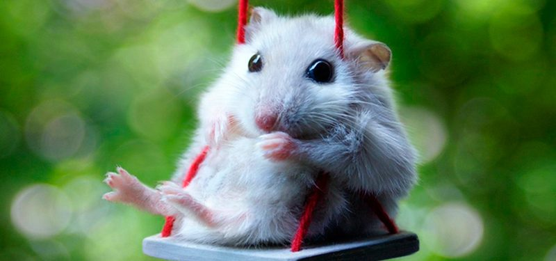
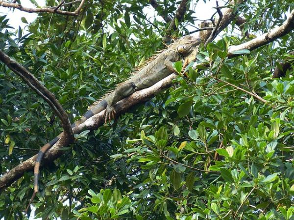
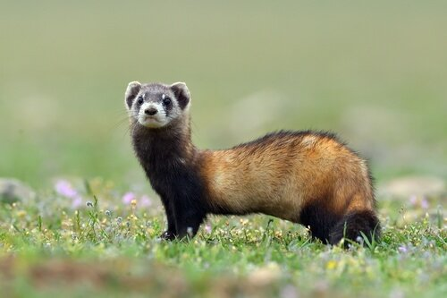
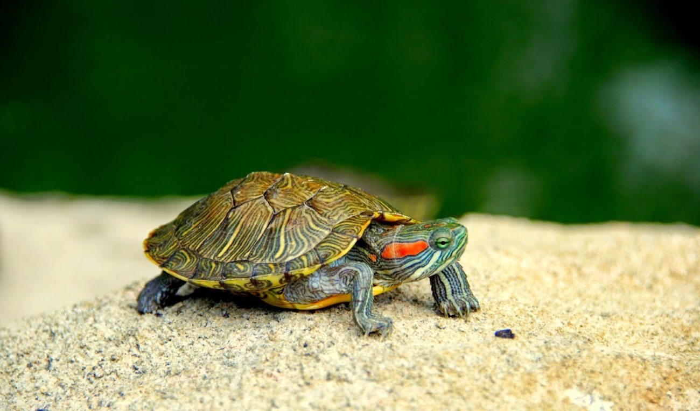
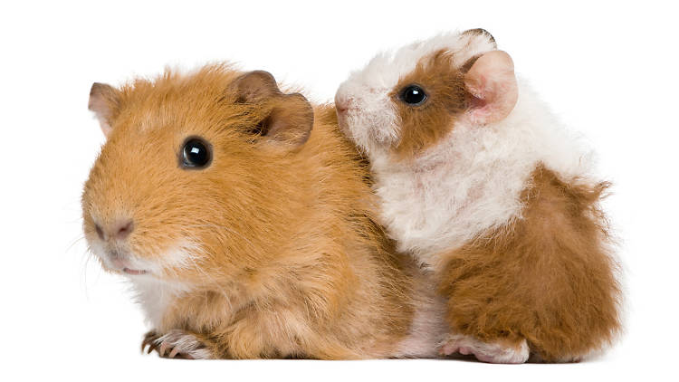

CONEJOS
Los conejos requieren mucho menos espacio que gatos y perros. En una jaula de buen tamaño y acondicionada debidamente, pueden vivir saludablemente sin más necesidad de espacio. Sin embargo, se aconseja dejarlos saltar y explorar el hogar con la debida observación de sus dueños. Como suelen ser independientes, requieren poco tiempo de sus propietarios. Pero hay que tener cuidado para no abandonar el animal, principalmente si son regalados a los niños.
Más información...
...Hamster...
El hámster es, sin duda alguna, la mascota ideal para principiantes o personas que no poseen mucho espacio donde mantener una mascota. Son animales de estructura frágil por su pequeño tamaño. No es recomendable que sean mascotas de niños menores de ocho años, porque podrían hacerles daño si no los manipulan con cuidado. No viven mucho tiempo. En buenas condiciones de higiene, salud y actividad física un hámster puede vivir hasta tres años.

Más información...
...IGUANA...
Algunos compradores la compran por el llamativo color verde de los animales jóvenes y su tamaño próximo a los 50 cms. Pero con el tiempo pueden llegar a medir 1.80 metros, tamaño inasumible si sólo se dispone de un piso pequeño.
La iguana vive aproximadamente 13 años.

Más información...
...HURÓN...
El hurón es un animal pequeño, carnívoro, que suele pesar entre 1 y 2 kilos.
Puede integrarse a la vida hogareña y se caracteriza por ser muy activo y porque su curiosidad no tiene fin. Duerme muchas horas diarias y, por sus particularidades, necesita de cuidados y atención...

Más información...
...TORTUGA DE AGUA...
Las tortugas de agua son unas mascotas muy populares, entre otras cosas, porque son relativamente fáciles de cuidar.
Esta clase de tortugas necesitan un espacio con agua y otro seco para vivir, no se necesita mucha profundidad en el agua, pero sí la suficiente como para que la tortuga pueda nadar, girar y sumergirse cómodamente.
Recuerda que las tortugas acuáticas pueden crecer fácilmente hasta los 20 cm de diámetro si están bien cuidadas...

Más información...
CUYO
Estos animalitos, carecen de cola y sus dientes crecen continuamente durante toda la vida, lo que hace que deban ser controlados para evitar problemas. Viven aproximadamente de 5 a 7 años. Es un animal muy vocalizador, se hace escuchar a través de agudos chillidos para reclamar comida, agua o cuando se siente incómodo por la suciedad de su hábitat. En cautiverio la base de su dieta abarca desde heno o alfalfa, verduras y frutas (manzana, zanahorias y lechuga) y pienso, el cual sólo se lo darás cuando está creciendo.

Más información...
TARÁNTULA
La mayoría de tarántulas no son peligrosas y pueden ser fácilmente adquiridas como animales de compañía. Por naturaleza son salvajes y no les gusta mucho ser manoseadas. No suelen atacar a los humanos, aunque podrían clavar los colmillos si son manipuladas de manera incorrecta o si son cogidas con demasiada frecuencia. Ante una picadura de este tipo de araña, los especialistas recomiendan aplicar primeros auxilios, mientras se busca a un especialista. Tu mascota no necesitará mucho espacio, un terrario de tamaño medio es suficiente. El fondo puede estar recubierto de barro, más o menos unos 4 centímetros para que puede excavar. Debe tener siempre un recipiente con agua fresca para estar hidratada. También es aconsejable introducir una estructura con ramas para que puede trepar y construir su telaraña.

Más información...
PIRAÑA
Son peces que se hacen muy grandes ya que llegan a medir hasta 35 centímetros. Una piraña nunca puede estar sola; están acostumbradas a vivir en manadas y, por tanto, no te aconsejo que adoptes un solo ejemplar. Puedes tener juntas hasta cuatro pirañas en un mismo acuario; pero has de observarlas muy bien porque si no están bien alimentadas pueden llegar a atacarse e, incluso, comerse unas a otra. Los expertos aconsejan que el estanque donde vayan a vivir tenga un tamaño mínimo de 120 litros. Y algo también muy importante es la temperatura a la que debes mantener constantemente el agua de la pecera; ésta debe estar entre 22ºC y 24ºC.s. Ponles plantas acuáticas y algunos refugios. Al contrario de lo que pueda parecer, las pirañas son animales bastante tímidos y necesitan tener escondites y lugares donde sentirse seguras. Además, las plantas apaciguan la luz, algo que puede llegar a dañar a tus peces.
Más información...